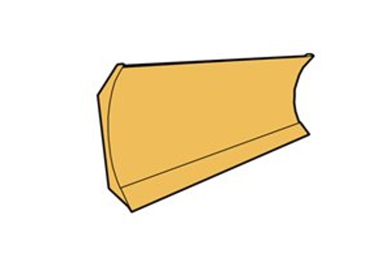
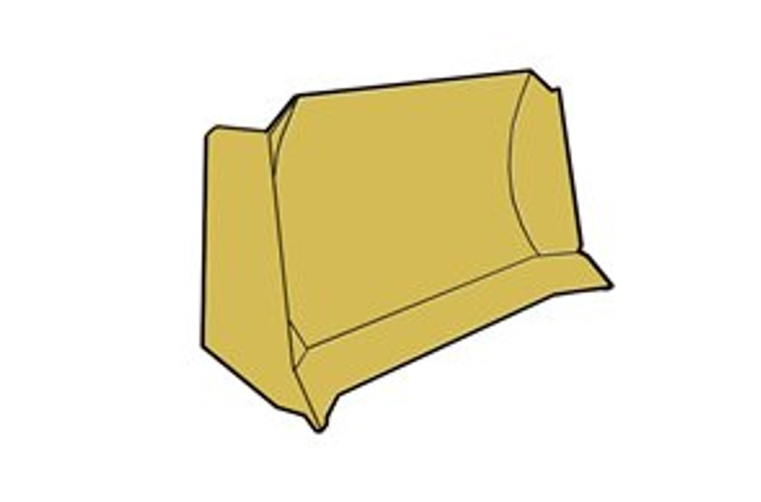
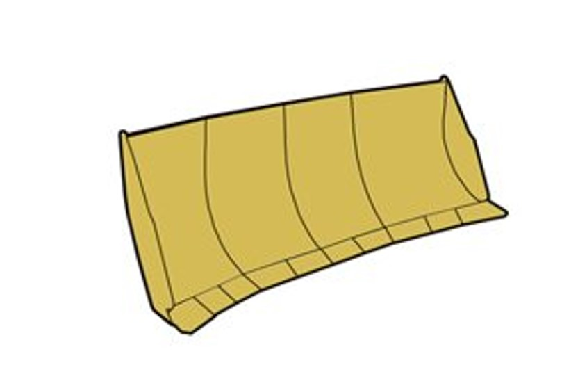
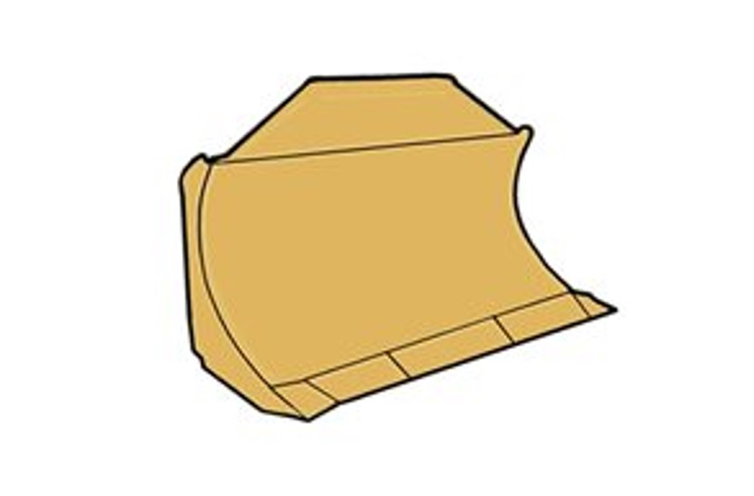
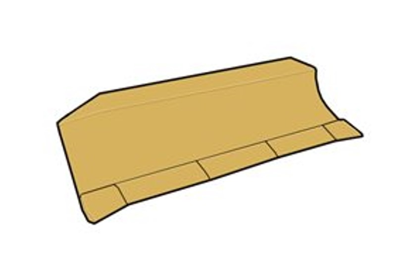
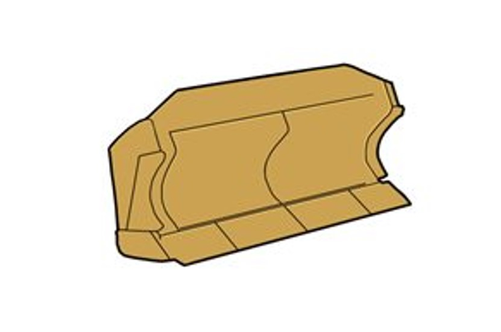

About
A bulldozer is a powerful piece of heavy machinery used primarily for moving large quantities of soil, debris, or other materials. It features a broad, flat blade attached to the front and is typically equipped with tracks for stability and traction on uneven terrain.
Bull dozers are also known as:- Dozer
- Blade
- Earth Mover
- Crawler Tractor
- Cat (informal term referring to Caterpillar equipment)
- Bull
- Push Cat
Key Features:
-
Blade:
A heavy, wide metal plate used for pushing soil and other materials, adjustable for angle and height.
Types of Bulldozer Blades
-
Straight Blade (S-Blade):
A flat, straight blade without any curve, used for pushing material in a straight line, grading, and scraping.
 -
Semi-U Blade:
A slightly curved blade effective for carrying larger loads and shaping terrain, useful for excavation tasks.
 -
U Blade:
A deeply curved blade designed for heavy-duty applications, excellent for grading and earthmoving tasks.
 -
Angle Blade:
A blade that can be angled left or right, ideal for ditching and grading by moving material sideways.
 -
Tilt Blade:
A blade that can tilt forward and backward, providing flexibility for precise grading and leveling.
 -
Combination Blade:
A versatile blade that combines features of different types for efficient switching between tasks.

Additional Features
- Reinforcement: Many blades come with reinforcement plates for increased durability.
- Cutting Edges: Equipped with replaceable cutting edges to maintain performance.
- Wear Plates: Protect against wear from side loading during operations.
Applications
- Land clearing
- Grading and leveling
- Excavation
- Material transport
- Snow removal
-
Straight Blade (S-Blade):
-
Tracks:
Provide better traction on soft or uneven terrain, distributing weight evenly to reduce ground pressure.
Key Features
- Design: Made from steel, rubber, or a combination, tracks consist of links forming a continuous loop with a tread pattern for grip.
- Weight Distribution: Distribute the bulldozer's weight over a larger surface area to prevent sinking.
- Traction: Enhanced grip allows effective operation on muddy, sandy, or uneven surfaces.
- Stability: Better stability on slopes and rough terrains, reducing tipping risk.
- Durability: Designed to withstand harsh conditions and resist wear and damage.
- Maintenance: Regular inspection and maintenance are necessary for longevity, including checking for wear and adjusting tension.
- Types:
- Standard Tracks: General construction use.
- Wide Tracks: Ideal for soft or swampy ground.
- Heavy-Duty Tracks: Reinforced for extreme conditions.
-
Ripper:
A ripper is an attachment used at the rear of a bulldozer to break up hard soil, rock, or other dense materials. It is essential for preparing the ground for further work.
Key Features
- Design: Typically consists of one or more sharp, heavy-duty tines that penetrate the ground.
- Types:
- Single Shank Ripper: One large shank, suitable for deeper penetration.
- Multi-Shank Ripper: Multiple shanks for wider coverage and efficient tearing of surfaces.
- Hydraulic Operation: Many rippers are hydraulically operated for precise control.
- Adjustability: Some rippers can be adjusted for angle and depth, making them versatile for different tasks.
Applications
- Soil Preparation: Ideal for breaking up hard ground before grading or excavation.
- Rock Removal: Used in mining and construction to loosen rock for removal.
- Land Clearing: Effective for clearing land by breaking up roots and tough vegetation.
- Trenching: Can be used to create trenches for drainage or utility lines.
Advantages
- Increased Efficiency: Allows bulldozers to perform more tasks, enhancing productivity.
- Cost-Effective: Eliminates the need for multiple machines for different tasks.
- Durability: Designed to withstand heavy use in challenging conditions.
-
Cab:
Designed for comfort and visibility, featuring controls for operating the blade and ripper.
-
Hydraulic System:
Allows smooth and precise operation of the blade and ripper.
-
Weight and Stability:
Heavy machines that provide stability on slopes and uneven ground.
-
Versatility:
Can be equipped with various attachments for tasks beyond pushing dirt.
-
Durability:
Built from high-strength materials to withstand tough conditions.
-
Engine Power:
Equipped with powerful engines for efficient performance in demanding environments.
Common Uses:
-
Earthmoving:
Ideal for clearing land, grading surfaces, and moving soil or rubble.

-
Construction:
Used to prepare sites for building foundations and road construction.

-
Landfill Operations:
Effective in compacting and spreading materials in landfills.

-
Mining:
Useful for removing overburden and pushing materials in mining operations.

Types:
-
Crawler Bulldozers:
Equipped with tracks, they provide better stability and are suited for rough terrain.

-
Wheeled Bulldozers:
More mobile and faster on flat surfaces, suitable for urban environments.

-
Compact Bulldozers:
Smaller and more maneuverable, designed for tight spaces and smaller projects.

-
Mini Bulldozers:
These are the smallest type of bulldozer, ideal for small-scale tasks. They are commonly used in landscaping and in areas where space is limited.

-
Forestry Bulldozers:
Designed specifically for forestry work, these bulldozers often have reinforced structures and special attachments for clearing land and moving logs.

-
High-Speed Bulldozers:
These are specially designed for fast movement and efficiency, often used in projects requiring rapid site preparation or road construction.

History
-
Early Development
Late 19th Century: The concept of using a tractor with a blade for earthmoving began to emerge. Steam-powered tractors were among the first machines to perform similar functions, but they were limited in efficiency and power.
-
1920s: The Birth of the Bulldozer
1923: The term "bulldozer" became widely used, referring specifically to a tractor fitted with a large, heavy blade. The first true bulldozer was developed when a detachable blade was added to a tractor, enabling it to push earth and debris.
Caterpillar: In 1925, Caterpillar introduced the first modern bulldozer by attaching a blade to its crawler tractors, enhancing their utility in construction and agriculture.
-
1930s-1940s: Expansion and Innovation
World War II: The demand for bulldozers surged during the war for military construction projects, such as building airfields and roads. This period saw significant advancements in bulldozer technology.
Post-War Era: After the war, bulldozers became essential for infrastructure development, urbanization, and agricultural practices, leading to increased production and innovation in design.
-
1950s-1970s: Advancements in Technology
Hydraulic Systems: The introduction of hydraulic systems revolutionized bulldozer operations, allowing for more precise control of the blade and attachments.
Increased Size and Power: Manufacturers began producing larger and more powerful models, catering to heavier earthmoving tasks.
-
1980s-Present: Modernization and Automation
Computerization: The use of electronic controls and computer systems improved efficiency and accuracy, enabling features like GPS-guided grading.
Environmental Concerns: Modern bulldozers are designed to be more fuel-efficient and to meet stricter emissions regulations.
Technological Integration: Today’s bulldozers often come equipped with advanced technology, including remote control capabilities and automated systems, enhancing their versatility and safety.